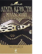

Хикори-дикори

Агата Кристи выпустила несколько своих книг под именем Агата Кристи Маллован. Сделала она это из уважения к своему мужу - археологу Максу Малловану. В эту книгу вошло два именно таких произведения великой писательницы. В студенческом общежитии начинают исчезать вещи... На первый взгляд пропажи туфли, поваренной книги, рюкзака, лампочки не предвещают ничего ужасного, но великий сыщик Эркюль Пуаро чувствует, что зло грядет. Да и детская считалка, давшая название роману, выглядит как предзнаменование... ("Хикори-дикори"). Загадки древности - почище любого детектива. Особенно на Востоке, который сам по себе загадка и дело тонкое. На археологических раскопках в Сирии, которыми руководил Макс Маллован, иногда случались странные и загадочные события. Много знаменитых романов Леди Агаты создано по мотивам этих событий. О чем писательница и вспоминает в веселой и одновременно остросюжетной кн